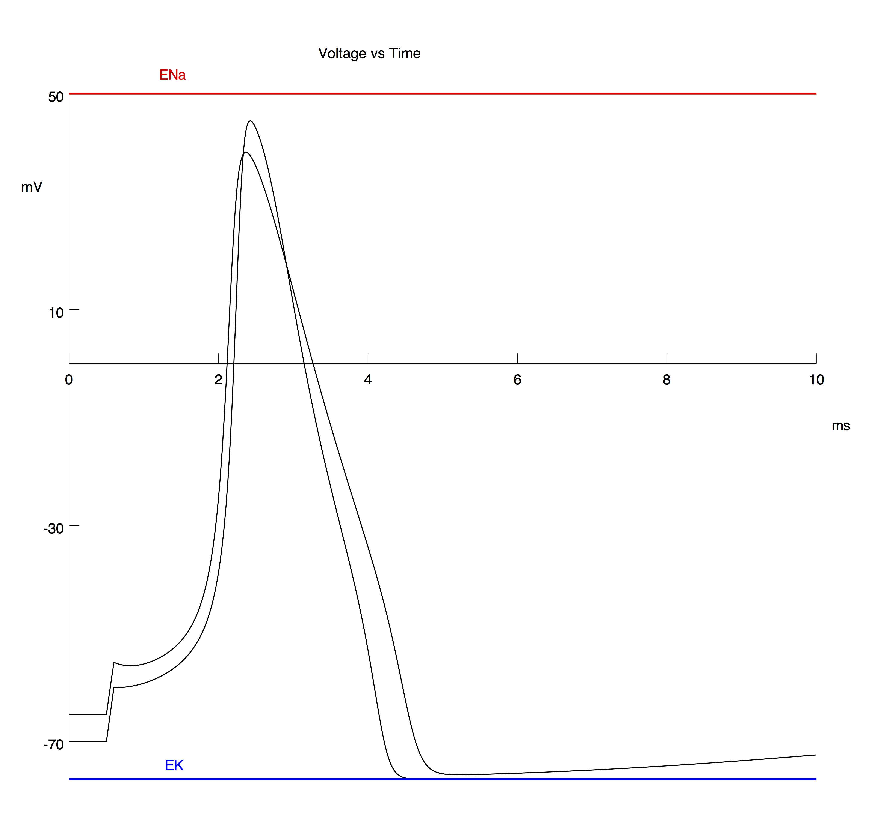

This is the readme for the model associated with the paper: Moore JW (2015) Enhancing the Hodgkin-Huxley Equations: Simulations Based on the First Publication in the Biophysical Journal. Biophys J 109:1317-20 This code was supplied by John Moore and Michael Hines. This model is written in NEURON which is freely available at http://www.neuron.yale.edu and is required to run this model. See help at https://senselab.med.yale.edu/ModelDB/NEURON_DwnldGuide.html to download and run the model. Start the simulation with the mosinit.hoc (see above link). Once the simulation is running click the "Reset & Run" button. This ran and graphed the voltage using the 4th power version of the K channel. Then select "Keep Lines" in Graph[0] (can either click in the box in the upper left corner of the graph below the title bar, or right click, and then drag the mouse down to release on "Keep Lines"). Click the "Replace HH K channels with HHkM channels", and then click "Reset & Run" again. This added a voltage trace using the n to the 6th power version of the K channel (and no leak channel). Graph[0] should now contain an image similar to Figure 2 in the paper: 